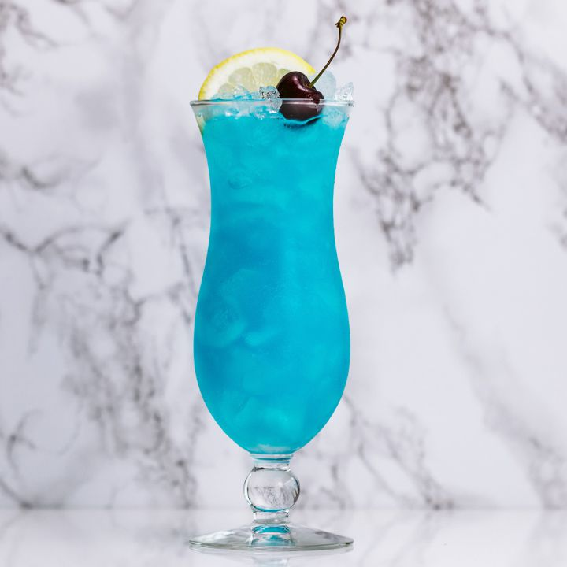

Home
Blue Lagoon

Description
Everything you need to know about the Blue Lagoon is right in the name. Tall, refreshing and bluer than the bluest Caribbean sky, the cocktail turns vodka, blue curaçao and lemonade into a drink you’ll want to dive into.
Ingredients
- 1 ounce vodka
- 1 ounce blue curaçao
- 4 ounces lemonade
- Garnish: lemon wheel
- Garnish: maraschino cherry
Steps
- Add the vodka, blue curaçao and lemonade to a shaker with ice and shake until well-chilled.
- Strain into a hurricane glass over crushed ice.
- Garnish with a lemon wheel and maraschino cherry.